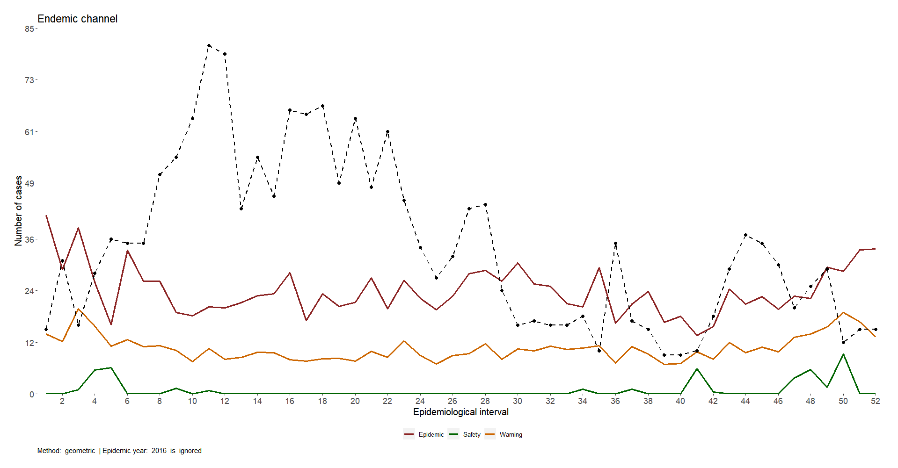

Building an Endemic Channel with epiCo
endemic_channel.RmdepiCo’s endemic channel module is a tool to estimate a central tendency line and upper and lower limits for the expected number of cases of a disease based on the historical data provided by the user and a set of customized parameters.
The endemic_channel function allows users to:
- Estimate a central tendency measure (arithmetic mean, geometric mean, or median).
- Estimate a confidence interval (based on the selected central tendency measure).
- Select the epidemic (outlier) years in your data and decide how to handle them.
- Plot the estimated endemic channel with the parameters and/or assumptions displayed.
- Plot the current (observed) cases to evaluate your epidemiological situation (i.e., the occurrence of an outbreak).
In the following vignette, users will learn:
- What is an endemic channel and what are its benefits, drawbacks, and cautions.
- An example of the historical data needed to build an endemic channel.
- How to use the
endemic_channelfunction. - How to interpret and communicate the results.
1. What is an endemic channel?
Using an endemic channel is a visual strategy to represent the historical behavior of a disease in a specific region on an epidemic curve that defines the central tendency of the cases during a year and the upper and lower limits where cases are expected to vary. This plot provides four areas known as “\(\color{green}{\text{Success}}\)”, “\(\color{Gold}{\text{Safety}}\)”, “\(\color{orange}{\text{Warning}}\)”, and “\(\color{Red}{\text{Epidemic}}\)” bands (Figure 1), which are later used to define the epidemiological situation of the region based on the current (observed) cases.
The broader definition and methodology for the endemic channel were provided by Bormant (1999).

The data needed to build an endemic channel is the weekly or monthly incidence of the disease for previous years in the region of interest. epiCo asks for at least one year of data, but endemic channels are typically estimated at 5 to 7 years of information.
It is natural to presume that more years provide better estimations since the statistical analyses will be more robust, but it is important to have contextual information to ensure that transmission, surveillance, or demographic conditions (among other factors) have not changed during this period of time. Regarding the frequency of the data, weekly incidence may provide more useful information about the disease behavior and the moment in which an epidemiological warning should be raised; however, it is up to the experience of the users and their context whether this resolution of the data can be achieved.
Another common decision while building an endemic channel is to
ignore previous epidemic years to avoid misrepresenting the traditional
transmission dynamics. epiCo does not suggest epidemic
years automatically, but its endemic_channel function does
provide the option to annotate the outlier years and decide whether to
include, ignore, or adjust them. More data-gathering tips and sources
are provided later in this vignette.
The central tendency measure (CTM)
To have a statistical summary of the disease behavior, the endemic channel provides a central tendency measure (CTM) that should describe the typical value of the historical data.
Since the nature of the epidemiological data tends not to be normal,
the typically used CTM in the endemic channels is the geometric
mean. This CTM is known to better represent the expected value of a
data set with a skewed distribution and/or is susceptible to outliers
(previous outbreaks). The endemic_channel function uses the
geometric mean as the default CTM, but the arithmetic mean or median can
be chosen according to the user’s experience and context.
It is important to note that as the geometric mean performs a
multiplication of the data, when zero cases are reported in a moment of
time, the estimation leads to a zero CTM. To avoid this,
epiCo’s endemic_channel function performs
a shift on the data to sum up one case (the default value) for all
observations, and then it subtracts this shift from the final
calculation. To avoid random selection of the shift, users can ask the
endemic_channel function to find an optimal value based on
de la Cruz &
Kreft (2019), or they can also ask to use a weighted method as
described by Habib
(2012).
Finally, the endemic_channel function can perform a
Poisson test (unusual behavior method) on the historical data if it is
requested by the user after taking into the account the pertinence of
the test, since it is mostly used for scenarios or diseases with very
low incidence records. This method uses the arithmetic mean as CTM.
The upper and lower limits
The upper and lower limits of the endemic channel provide a confidence interval that is used to define the epidemiological bands previously described.
epiCo’s endemic_channel function has
the following preset of limits according to the selected CTM:
- Arithmetic or geometric mean as CTM: mean +/- t value for a 95% CI multiplied by the variance of the data over the number of observations.
- Median as CTM: quantiles 0.25 and 0.75 as lower and upper limits, respectively.
- Poisson test (unusual behavior method): limits provided by a two-sided Poisson test with 0.95% CI
2. Historical data needed to build an endemic channel
This section provides some strategies to obtain, handle, and gather the historical data needed to build an endemic channel. It presumes that the user has either the line list or incidence data for the disease of interest or the need to consult historical data from the Colombian National Surveillance System (SIVIGILA).
Regardless of the user´s case, the goal of this section is to create
an incidence object with historical data on the disease.
This object must account for the incidence of a single region (no groups
are allowed in the endemic_channel function), it must have
a weekly or monthly interval (epiweeks are also allowed), and it must
represent at least one year of information.
To have a broader understanding of the incidence
package, please refer to its vignettes.
Historic incidence from the line list or SIVIGILA data
The endemic channel is more useful when data up to the immediate previous year is available; however, this is not always possible for users outside of the surveillance institutions. As an option, users can access SIVIGILA’s line list data that is typically published until the second semester of the year (i.e., data for 2022 was published in the second semester of 2023).
For this example, the data provided in the data folder of the package will be used. These data present the data for dengue cases for all municipalities in Tolima for the years 2015 to 2021. In this case, we will use the cases from the municipality of Ibagué to calculate the respective endemic channel.
library(epiCo)
library(incidence)
data("epi_data")
data_event <- epi_data
data_ibague <- data_event[data_event$cod_mun_o == 73001, ]
## Building the historic incidence data
incidence_historic <- incidence(data_ibague$fec_not,
interval = "1 epiweek"
)
print(incidence_historic)When users have their own line list data, the goal is the same: to
clean and handle the data to build the incidence object
(named incidence_historic in the previous example). The key
message is that a list of dates that account for the event of interest
is needed to later be used in the incidence
package.
Setting up the data from incidence information
Future versions of epiCo’s
endemic_channel function will allow the users to import a
table accounting for periods of time (weeks or months) and count of
cases, so when they do not have specific information on the dates for
each case, the endemic channel can still be built.
3. Using epiCo’s endemic_channel
function
After gathering the incidence data, users are ready to ask epiCo to build an endemic channel.
The endemic_channel function has the following
parameters:
incidence_historic: An incidence object with the case counts of the previous yearsobservations: A numeric vector with the current observations (default = NULL)method: A string with the mean calculation method of preference (“median”, “mean”, or “geometric”) or “unusual_behavior” method (Poisson Distribution Test) (default = “geometric”)geom_method: A string with the selected method for geometric mean calculation (see epiCo’s geom_mean function) (default = “shifted”).outlier_years: A numeric vector with the outlier (epidemic) years (default = NULL).-
outliers_handling: A string with the handling decision regarding outlier years:- ignored = data from outlier years will not be taken into account (default).
- included = data from outlier years will take into account.
- replaced_by_median = data from outlier years will be replaced with the median and taken into account.
- replaced_by_mean = data from outlier years will be replaced with the mean and taken into account.
- replaced_by_geom_mean = data from outlier years will be replaced with the geometric mean and taken into account.
ci: A numeric value to specify the confidence interval to use with the geometric method (default = 0.95).plot: A boolean for displaying a plot (default = FALSE).
The output of epiCo’s endemic_channel function
is a dataframe with the observation, historical mean, and confidence
intervals, and a plot displaying the four epidemiological bands, the
current observations (if provided), and the methods and outliers
handling set by the user.
Example
The following example uses the previously historic incidence accessed from the SIVIGILA data source to build the 2021 endemic channel for Ibagué City.
observations <- sample(15:100, 52, replace = FALSE)
outlier_years <- c(2016, 2019)
ibague_endemic_chanel <- endemic_channel(
incidence_historic = incidence_historic,
observations = observations,
outlier_years = outlier_years,
plot = FALSE
)
ibague_endemic_chanel$endemic_channel_plot